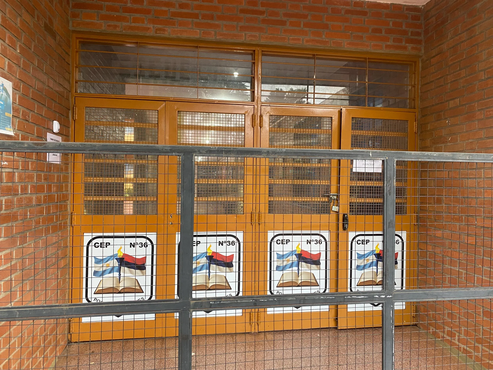
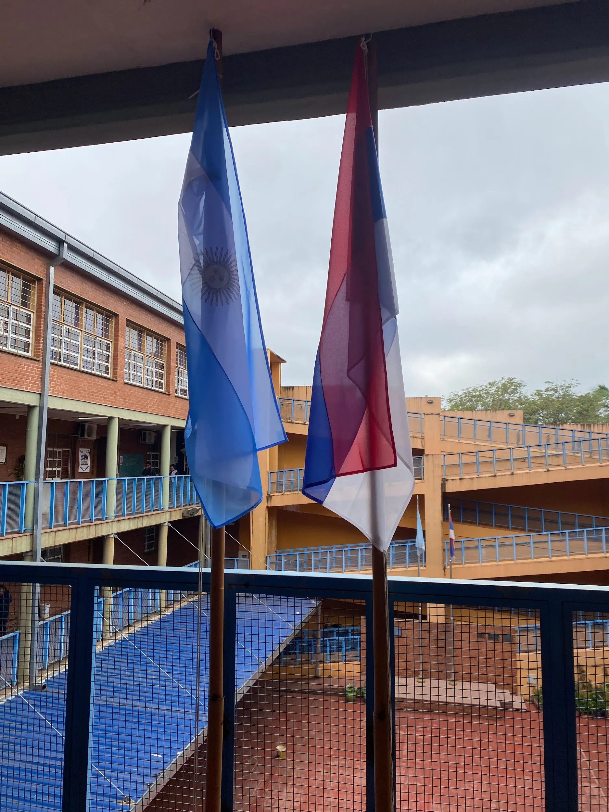
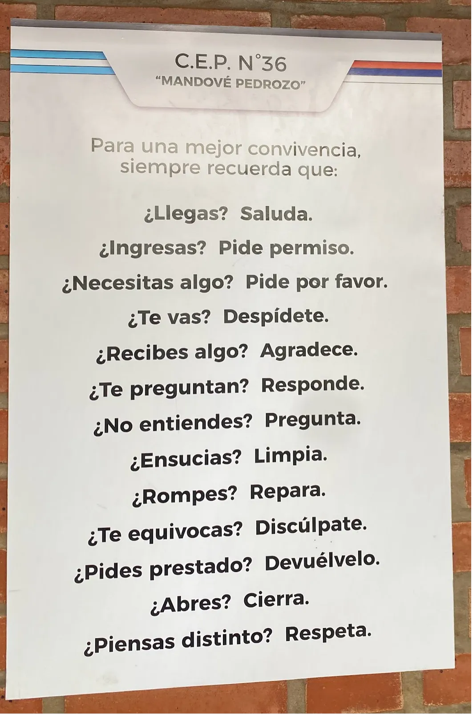
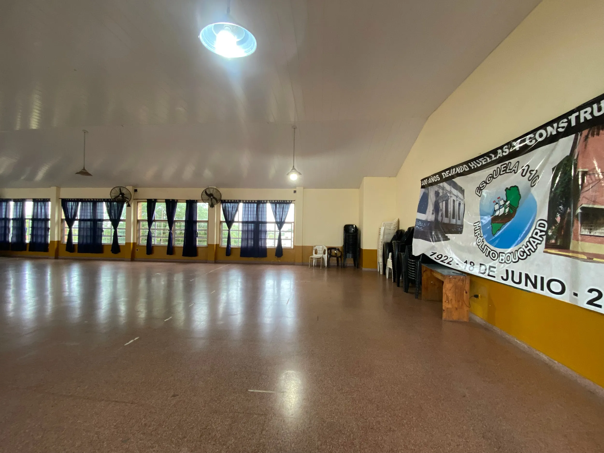
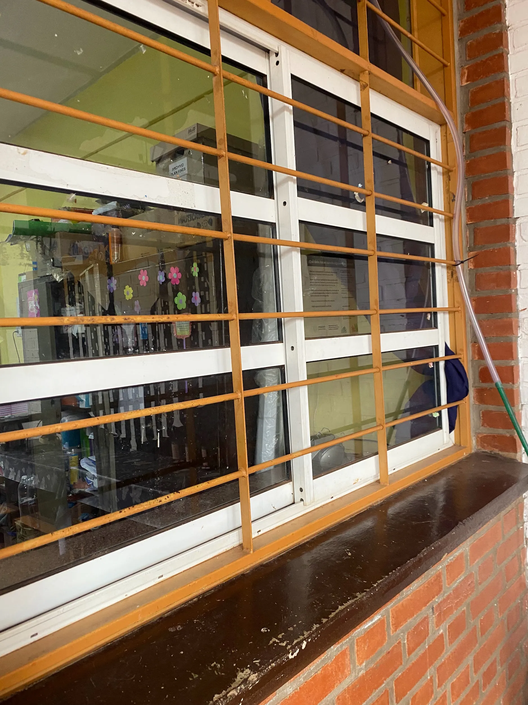
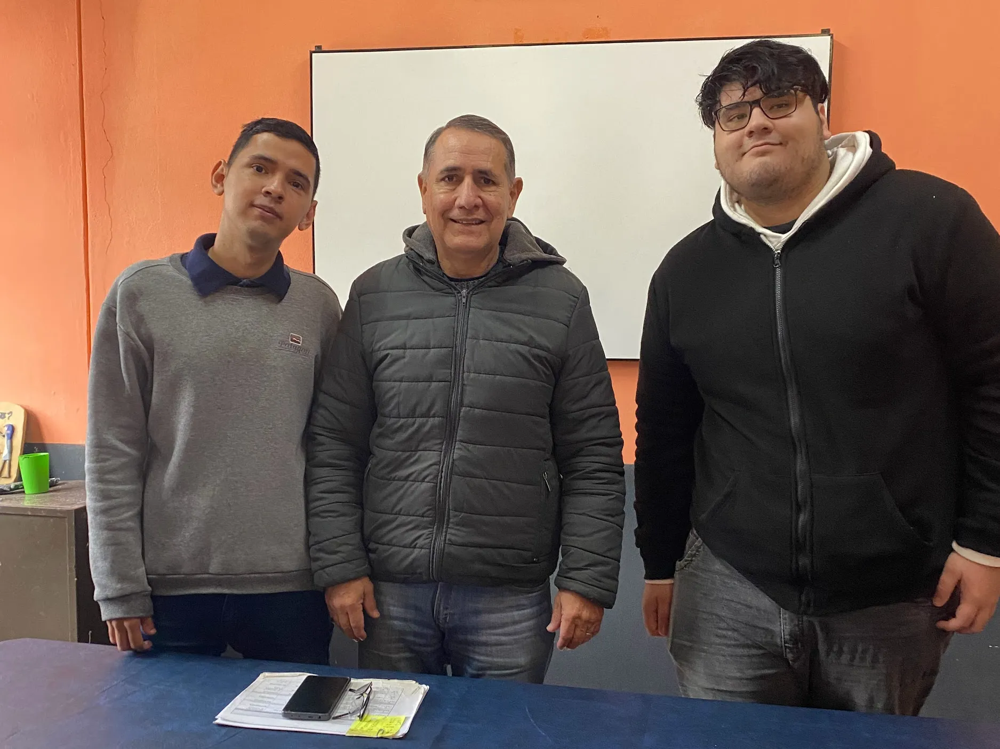

Visita Institucional al CEP N.º 36

En el marco de la asignatura Práctica I del Profesorado en Educación Secundaria en Tecnologías de la Información y la Comunicación, se realizó una visita institucional al CEP N.º 36, con el objetivo de conocer su funcionamiento desde una perspectiva organizacional, pedagógica y social. La experiencia se desarrolló a partir de una entrevista al director de la institución, Orlando Lorenzo Alé, complementada con instancias de observación directa de los espacios escolares y su dinámica cotidiana.

Fachada principal del CEP N.º 36 sobre Avenida Corrientes en Posadas.
La institución visitada
El CEP N.º 36 está ubicado en la ciudad de Posadas, Misiones, sobre la Avenida Corrientes 2400. Se trata de una institución de nivel secundario que organiza su propuesta educativa en dos turnos: mañana y tarde.
El turno mañana cuenta con orientación en Humanidades, mientras que el turno tarde se especializa en Artes Visuales, lo que constituye una característica distintiva dentro de su oferta académica. Esta diversidad de orientaciones permite responder a distintos intereses formativos de los estudiantes y amplía las posibilidades de trayectoria educativa dentro de la misma institución.
Durante la visita se pudo observar una estructura organizativa compuesta por múltiples divisiones en ambos turnos, lo que refleja una matrícula significativa y una dinámica institucional compleja.

Patio central de la escuela y su histórico mástil de banderas.
Características institucionales y convivencia
El CEP N.º 36 se caracteriza por una fuerte orientación formativa que trasciende lo estrictamente académico. Según lo expresado por el equipo directivo, la institución pone especial énfasis en la formación integral de los estudiantes, promoviendo valores como el respeto, la responsabilidad, la solidaridad y la convivencia.
Un aspecto central de la dinámica institucional es el trabajo sobre la convivencia escolar. Existen normas claras vinculadas al uso del uniforme, el respeto por los horarios y las formas de comunicación dentro del establecimiento. En este sentido, se ha implementado también una restricción del uso de teléfonos celulares durante las clases y recreos, con el propósito de fortalecer la interacción directa entre los estudiantes y mejorar el clima de convivencia escolar.
La institución desarrolla además diversas actividades comunitarias y formativas, como proyectos solidarios, actividades de forestación, exposiciones artísticas y jornadas deportivas. Entre estas iniciativas se destaca un ropero solidario gestionado por docentes y estudiantes, destinado a acompañar a miembros de la comunidad educativa en situación de vulnerabilidad.
“La relación entre la escuela y la comunidad constituye una parte muy importante de la experiencia educativa cotidiana.”

Paredes e infografías institucionales promoviendo valores de convivencia y buenas prácticas en la comunidad.
Infraestructura y recursos tecnológicos
En cuanto a la infraestructura, la institución cuenta con aulas, espacios administrativos y un Salón de Usos Múltiples (SUM), utilizado para actos escolares, exposiciones, charlas y actividades institucionales grupales.
Respecto a los recursos tecnológicos, la escuela dispone de proyectores, pantallas y equipos de sonido que se utilizan en el desarrollo de las clases y actividades. Sin embargo, se evidenció la necesidad de actualizar parte del equipamiento, especialmente los proyectores, debido a su antigüedad y limitaciones técnicas.
También se destacó la incorporación reciente de una pantalla moderna utilizada en el SUM, lo que representa una mejora en la disponibilidad de recursos tecnológicos. A pesar de estos avances, persiste la necesidad de fortalecer la infraestructura tecnológica general para potenciar las propuestas pedagógicas mediadas por recursos digitales en cada aula.

Vista del Salón de Usos Múltiples (SUM), espacio clave para actos y exposiciones.

Sector del kiosco escolar, punto de encuentro de los estudiantes durante los recreos.
Entrevista institucional y gestión
La entrevista realizada al director permitió obtener una mirada amplia sobre el funcionamiento de la institución, sus desafíos y sus estrategias de trabajo cotidianas.
A partir del diálogo, se identificó que la institución no solo se enfoca en la formación académica, sino también en la construcción de valores y en el acompañamiento integral de los estudiantes. Asimismo, se abordaron problemáticas vinculadas al financiamiento, el mantenimiento de la infraestructura y la necesidad de optimizar los recursos disponibles.
El directivo también destacó el acompañamiento permanente a los estudiantes y la flexibilidad institucional como estrategias para favorecer la permanencia y el egreso escolar. Además, se remarcó la importancia de la orientación vocacional y el vínculo con instituciones de educación superior como parte del proyecto formativo de los años superiores.
“La evaluación no se centra únicamente en los resultados, sino también en el recorrido realizado durante el año escolar.”

Encuentro y entrevista con el director del CEP N.º 36, Orlando Lorenzo Alé, durante la visita.
Características de los estudiantes y trayectoria
La población estudiantil proviene en su mayoría de contextos socioeconómicos humildes, lo cual incide directamente en las dinámicas institucionales y en las estrategias de acompañamiento implementadas.
Si bien la deserción escolar es relativamente baja, se observa una movilidad constante de estudiantes debido a cambios de domicilio o situaciones de vulnerabilidad familiar. Frente a esto, la institución implementa estrategias de seguimiento individual y acompañamiento cercano.
También se atienden situaciones de integración educativa mediante el trabajo articulado de un gabinete psicopedagógico y docentes de apoyo, lo que permite abordar de manera inclusiva la diversidad de trayectorias escolares dentro del sistema educativo de la provincia.
Reflexión final
La visita institucional al CEP N.º 36 permitió comprender de manera directa cómo se organiza y funciona una institución educativa real, superando la dimensión estrictamente teórica trabajada en el aula de nivel superior.
La experiencia favoreció la observación de la complejidad de los procesos institucionales, el rol clave del equipo directivo y la importancia del trabajo colaborativo en la construcción de un clima escolar que resulte positivo para el aprendizaje.
Desde nuestra formación docente en TIC, esta instancia resulta fundamental porque nos permite desarrollar una mirada crítica sobre las escuelas asociadas, comprendiendo que la tecnología, la gestión y la pedagogía se deben articular dentro de un mismo sistema integral que busca garantizar, ante todo, el derecho a la educación de calidad.